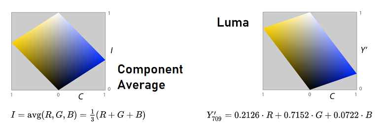

Imaging & Videochevron_right
Renderingchevron_right
Algovischevron_right
Computer Graphicschevron_right
HCIchevron_right
A Grayscale in an image is where the value of each pixel is a single sample that represents only an amount of light; that is, it carries only intensity information. Grayscale images, a kind of monochrome in black and white or gray, are made up exclusively of shades of gray. Contrast ranges from black at the weakest intensity to white at the strongest.
Apply a grayscale conversion to an image and a video using RGB averaging and Luma.
The RGB color model is an additive color model in which red, green, and blue light are added together in various ways to reproduce a broad array of colors. The name of the model comes from the initials of the three additive primary colors, red, green, and blue.
The main purpose of the RGB color model is for the sensing, representation, and display of images in electronic systems, such as televisions and computers, though it has also been used in conventional photography. Before the electronic age, the RGB color model already had a solid theory behind it, based in human perception of colors.
In computing, the grayscale can be computed through rational numbers, image pixels are usually quantized to store them as unsigned integers, to reduce the required storage and computation. Some early grayscale monitors can only display up to sixteen different shades, which would be stored in binary form using 4 bits. But today grayscale images (such as photographs) intended for visual display (both on screen and printed) are commonly stored with 8 bits per sampled pixel. This pixel depth allows 256 different intensities (i.e., shades of gray) to be recorded, and also simplifies computation as each pixel sample can be accessed individually as one full byte. However, if these intensities were spaced equally in proportion to the amount of physical light they represent at that pixel (called a linear encoding or scale), the differences between adjacent dark shades could be quite noticeable as banding artifacts, while many of the lighter shades would be "wasted" by encoding a lot of perceptually-indistinguishable increments. Therefore, the shades are instead typically spread out evenly on a gamma-compressed nonlinear scale, which better approximates uniform perceptual increments for both dark and light shades, usually making these 256 shades enough (just barely) to avoid noticeable increments.
In order to convert an image to grayscale, there are different approaches, some more intuitive than others. For this workshop, two will be discussed: RGB average and Luma.
The average of the channels (RGB) is an intuitive approach, which seeks to calculate the average of the 3 channels (red, green and blue) for each pixel of the image, obtaining a single value, which will be assigned in each one of the 3 channels of the corresponding pixel of the new generated image. This combines the lightness or luminance contributed by each color band into a reasonable gray
The simplest definition is just the arithmetic mean, i.e. average, of the three components, in the HSI model called intensity. This is simply the projection of a point onto the neutral axis—the vertical height of a point in our tilted cube. The advantage is that, together with Euclidean-distance calculations of hue and chroma, this representation preserves distances and angles from the geometry of the RGB cube.approximation.

To our eyes green looks about ten times brighter than blue. Through many repetitions of carefully designed experiments, psychologists have figured out how different we perceive the luminance or red, green, and blue to be. They have provided us a different set of weights for our channel averaging to get total luminance.
Luma is the weighted average of gamma-corrected R, G, and B, based on their contribution to perceived lightness, long used as the monochromatic dimension in color television broadcast. For sRGB, the Rec. 709 primaries yield Y′709, digital NTSC uses Y′601 according to Rec. 601 and some other primaries are also in use which result in different coefficients. Y'709 will be used for this workshop.
This program is written in javascrip and uses a very powerfull drawing library called p5.js.
In order to apply each conversion (RGB Average and Luma) on the image, a function was designed to iterate over each pixel of the image and calculate the previously presented formulas. The new matrix that is returned contains only one value for each pixel, unlike the matrix of the original image, which contains 4 values for each [red, green, blue, alpha].
1link/**
2link *
3link * @param {*} img : image to be processed. Function changes the same reference to image.
4link * @param {*} convertion : type of convertion.
5link * @returns
6link */
7linkfunction applyConvertion (img, convertion){
8link let newImage = []; // Stores values in matrix : [[row1], [row2], ..., [rowN]]
9link let conv;
10link
11link if (convertion === 'avg') {
12link conv = (pixel) => (red(pixel) + green(pixel) + blue(pixel))/3;
13link } else {
14link conv = (pixel) => 0.2126 * red(pixel) + 0.7152 * green(pixel) + 0.0722 * blue(pixel);
15link }
16link
17link img.loadPixels();
18link for (let j = 0; j < img.height; j++) {
19link let row = [] // Single row of the matrix
20link for (let i = 0; i < img.width; i++) {
21link row.push(conv(img.get(i, j))); // Apply to every pixel in image
22link }
23link newImage.push(row);
24link }
25link return {
26link values: newImage
27link }
28link}
The images are converted and drawed on the canvas in the setup function, knowing that it only needs to be done once.
1linkfunction setup() {
2link createCanvas(775, 255);
3link img_original.resize(250, 250);
4link image(img_original, 0, 0);
5link
6link let values = [applyConvertion(img_original, 'avg').values, applyConvertion(img_original, 'luma').values];
7link
8link for (let i=0; i < values.length; i++) {
9link let curr = values[i]
10link let img = createImage(250, 250);
11link img.loadPixels();
12link for (let i = 0; i < img.width; i++) {
13link for (let j = 0; j < img.height; j++) {
14link img.set(i, j, color(curr[j][i]));
15link }
16link }
17link img.updatePixels();
18link image(img, 260*(i+1), 0);
19link }
20link
21link}
On the canvas is drawn: the original image, the image with RGB average and the image with Luma, respectively.
As a second reference, an image with different colors and a lower quality.
For the video, the loadPixels function was used, which allows obtaining each image of the video and the conversion functions were applied on them. The same functions were used to obtain the conversion of each pixel.
1linkfunction draw() {
2link background(0);
3link fingers.loadPixels();
4link
5link lienzo1.loadPixels();
6link lienzo2.loadPixels();
7link
8link for (let x = 0; x <fingers.width; x++) {
9link for (let y = 0; y < fingers.height; y++ ) {
10link
11link let loc = (x + y*fingers.width) * 4;
12link let prom = (fingers.pixels[loc] + fingers.pixels[loc + 1] + fingers.pixels[loc + 2])/3;
13link
14link lienzo1.pixels[loc] = prom;
15link lienzo1.pixels[loc + 1] = prom;
16link lienzo1.pixels[loc + 2] = prom;
17link lienzo1.pixels[loc + 3] = 255;
18link
19link let luma = 0.2126 * red(fingers.pixels[loc]) + 0.7152 * green(fingers.pixels[loc + 1]) + 0.0722 * blue(fingers.pixels[loc + 2]);
20link
21link lienzo2.pixels[loc] = luma;
22link lienzo2.pixels[loc + 1] = luma;
23link lienzo2.pixels[loc + 2] = luma;
24link lienzo2.pixels[loc + 3] = 255;
25link
26link }
27link }
28link
29link lienzo1.updatePixels();
30link lienzo2.updatePixels();
31link
32link image(fingers,1,0);
33link image(lienzo1,fingers.width,0);
34link image(lienzo2,fingers.width*2,0);
35link}
All the conversion and the drawing process is carried out in the draw function, and a frame rate of 3 is established, since a higher number requires a GPU processing capacity that we do not have.
On the canvas is drawn: the original video, the video with RGB average and the video with Luma, respectively.
Please click on the canvas to start playing the videos.
It is expected that future implementations will focus on developing methods with good results as Gamma correction, with lower computational costs